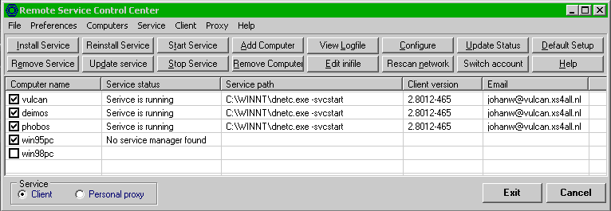
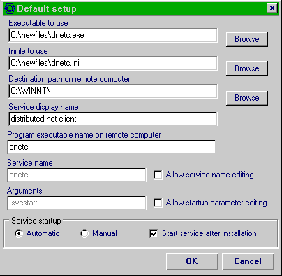
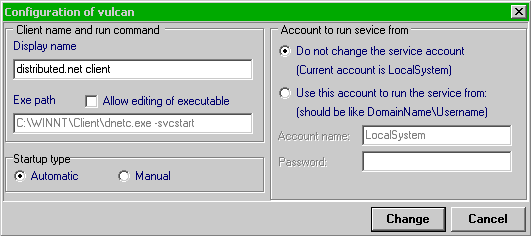
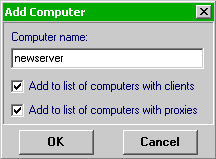
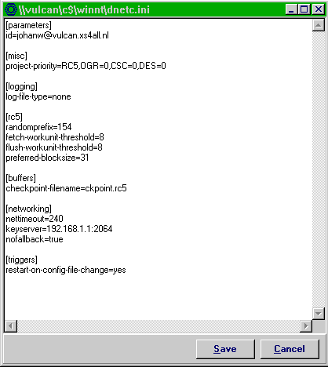
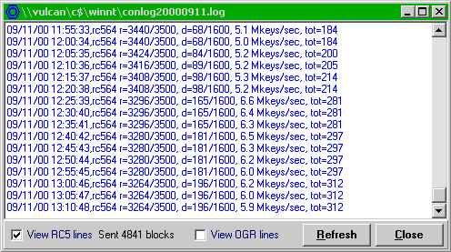

This program is currently configured to handle Distributed.net clients and personal proxies but it can be modified for other services easily. The program is written with Borland C++ Builder version 3.0 and comes with full source code. Compiling on later BCB versions requires a minor modification in the source (this change is already commented in the code, just see where compilation fails).
The program is distributed under the terms of the GNU General Public License.
However, since Magnus had contributed only a binary version without source, and didn't answer mail (my mail to him returned with error "mailbox quotum exceeded") I decided to rewrite this tool from scratch, but with the original user interface in mind.
I've sent my first version to Jeff Lawson from Distributed.net, and after some discussions I present here the current version. Full source code is supplied, and I distribute this under the GNU General Public License.
When the program is started you can add computer names by hand, or you can have the program scan the windows network and place all computer names it finds on the main screen (this can be rather slow on large or segmented networks). Right-clicking on a computer name brings up a context-sensitive popup menu.

If you check a checkbox in front of a computername it will try to connect with its service manager and display status information, or, if it can't find any status information or service manager, it will tell you that.
Now you can enter the default settings, like where the clients should be installed on the remote computers and which client executable and inifile to use. The program maintains two sets of settings, one for the client and one for the personal proxy.

Once installed you can change the configuration of a running client.

and add computernames manually if required.

You can also edit remote configuration files:

and view logfiles. The program can do some analyzing of proxy logfiles (it can calculate how much RC5 blocks and/or OGR stubs are sent) but for extensive logfile analyzing other programs are better suited.

If you normally don't login with a domain administrator account and therefore can't change the configuration on remote computers, the program has a feature to run under another user account. Your current account requires the right "to run as a part of the operating system". Usually accounts don't have this right (even administrator accounts don't have it by default), and if you have sufficient rights the program will try to add this privilege to your account. Otherwise you should log in under an administrator account and set it manually (for NT4, see the checkbox advanced user options in the NT user manager; for Windows 2000, add the account under which you will be running rscc under this privilige in Administrative tools -> Local security policy -> Local policies -> User rights -> User rights Assignment). If you have insufficient rights the program will tell you if you try to run it in another user context.
The username, password and domain name will be stored in the program ini file. By default they will be encrypted with RC5 with a fixed key so no password will be asked at program start. This is of course a security risk, anyone who can read the program source can also decrypt the password if he can get the inifile.
Therefore you can also supply a user-defined pssword for the RC5 encryption of these data. If you choose this the program will ask this password when it starts.
The login data is never saved in plain text and is written out with the maximum field lengths to prevent anyone from finding the password length by just looking at the inifile (usefull for very short passwords that can be brute-forced).
If you feel that even this is too unsafe, you can always type in the login information each time you start the program. But remember that NT saves this info with a much weaker encryption than RC5 (see http://www.l0pht.com/ for more information on this subject).
Note: the specific client commands (fetch, fluch, update and connect) work with client 468 and up. The proxy commands are not yet implemented in proxy 341, except the commands for the local proxy. The reload configuration option does not work with proxy up to and including 341. When they will be integrated is still unsure. These commands will silently fail when applied to a service that does not support them.